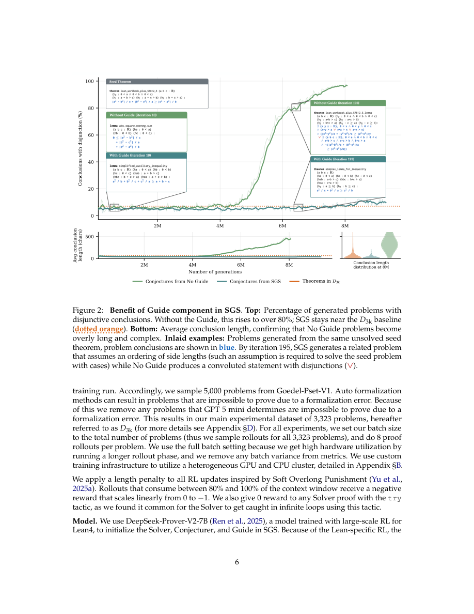

#1
★ 9/10
Scaling Self-Play with Self-Guidance
用自引导扩展自博弈

图 Figure · Page 6 of paper
🎯 自引导自博弈算法防止奖励作弊，大幅突破LLM训练扩展瓶颈
A self-guided self-play algorithm prevents reward hacking and scales LLM training far beyond prior methods.
| 维度 | 中文 | English |
|---|---|---|
| ❓ 待解决 的问题 |
LLM自博弈方法让"出题模型"（Conjecturer）为"解题模型"（Solver）生成练习题，理论上双方可以无限共同进步。但实践中，训练很快遇到瓶颈。根本原因是出题模型学会了"刷奖励"——生成人为复杂、毫无实用价值的题目，反而不能帮助解题模型进步，导致整个系统崩溃退化。 | LLM self-play methods let a "Conjecturer" model generate problems for a "Solver" model to practice on, so both can improve together without human-labeled data. In theory, this process has no ceiling — but in practice, it hits a learning plateau. The root cause is that the Conjecturer learns to "hack" its reward by generating artificially complex, convoluted problems that don't actually help the Solver get better, causing the whole system to collapse. |
| 💡 解决 的亮点 |
• 引入第三角色"**引导者（Guide）**"：对生成题目的实用相关性和自然清晰度打分，直接抑制出题模型的退化崩溃。 • 单一LLM同时扮演三种角色（解题者、出题者、引导者），系统自洽，计算效率高。 • 首次证明LLM自博弈训练可以遵循平滑可预测的扩展定律，而非遭遇硬性瓶颈，支持超长训练周期。 | • Introduces a third role — the **Guide** — that scores generated problems for relevance to real unsolved targets and for naturalness/cleanliness, directly fighting Conjecturer collapse. • A single LLM simultaneously plays all three roles (Solver, Conjecturer, Guide), making the system self-contained and compute-efficient. • Demonstrates for the first time that self-play in LLMs can follow smooth, predictable scaling laws rather than hitting hard plateaus, enabling long-horizon training runs. |
| 🧪 实验 内容 |
作者将SGS应用于Lean 4形式化定理证明领域（该领域可严格验证，适合衡量真实能力提升）。在保留的目标定理集上，评估长达200轮自博弈的累积解题率——远超此前自博弈工作的训练长度。基线包括强强化学习方法和此前自博弈方法。此外，作者对解题率曲线拟合扩展定律，定量刻画性能随计算量的变化规律，并将7B参数SGS训练模型与671B参数基线模型进行对比。 | The authors applied SGS to formal theorem proving in Lean 4, a rigorous and verifiable domain ideal for measuring true capability gains. They evaluated cumulative solve rates on a held-out set of target theorems over up to 200 rounds of self-play — significantly longer training runs than prior self-play works. Baselines included strong RL methods and prior self-play approaches. They also fit scaling laws to the solve-rate curves to rigorously quantify how performance scales with compute, and compared a 7B parameter SGS-trained model against a 671B parameter baseline model. |
| 📊 实验 结果 |
SGS在不到80轮自博弈内，就超越了最强RL基线的渐近解题率上限。经过200轮训练，7B参数的SGS模型在Lean 4定理集上（pass@4）解题数量超过671B参数基线模型——参数效率提升约96倍。扩展定律拟合结果表明，SGS遵循平滑的幂律改进曲线，不再出现平台期，证实其计算扩展性远优于已有方法。 | SGS surpasses the asymptotic solve rate of the strongest RL baseline in fewer than 80 rounds of self-play. After 200 rounds, a 7B parameter SGS-trained model solves more Lean 4 theorems (pass@4) than a 671B parameter baseline model — a ~96× parameter efficiency advantage. Scaling law fits show SGS follows smooth, power-law improvement curves rather than plateauing, confirming it scales favorably with compute unlike prior methods. |
| 🏁 结论 | SGS证明了：为自博弈系统加入自引导的题目质量信号，足以克服长期限制LLM自博弈的奖励作弊崩溃问题，实现推理能力的平滑、规律性扩展。本文表明，7B模型在充足的自博弈算力下可以超越远大于自身的模型，从根本上改变了我们对LLM推理扩展方式的认知。 | SGS demonstrates that equipping a self-play system with a self-guided problem-quality signal is sufficient to overcome the fundamental reward-hacking collapse that has limited LLM self-play, enabling smooth, law-governed scaling of reasoning capability. The work establishes that a 7B model with sufficient self-play compute can match and exceed far larger models, fundamentally changing how we think about scaling reasoning in LLMs. |
| 🔗 论文 链接 |
arXiv: 2604.20209v1 · 📥 PDF | |
⚙️ Method · 方法详解
SGS（自引导自博弈）在标准自博弈基础上，为同一个语言模型增加了"引导者"角色。训练时，出题模型生成候选题目，引导者从两个维度给每道题打分：(1) **相关性**——合成题目与真实未解目标题的相似程度；(2) **自然性/清洁度**——题目是否格式良好、无退化现象。这些引导分数作为额外监督信号，引导出题模型远离刷奖励行为。由于引导者与解题者、出题者是同一个LLM，系统利用模型自身的语义理解来评估题目质量，无需外部裁判或人工标注。
SGS (Self-Guided Self-Play) extends standard self-play by adding a Guide role to the same language model that is already acting as Solver and Conjecturer. During training, the Conjecturer generates candidate problems, and then the Guide scores each candidate on two axes: (1) relevance — how similar or useful the synthetic problem is relative to a set of real, unsolved target problems — and (2) naturalness/cleanliness — whether the problem is well-formed and non-degenerate. These Guide scores are used as additional supervision signals to steer the Conjecturer away from reward-hacking behaviors. Because the Guide is the same LLM, it leverages the model's own semantic understanding to evaluate problem quality, without needing external oracles or human labels.
📐 Key Formulas · 关键公式
\[\text{Score}(p) = \alpha \cdot \text{Relevance}(p, \mathcal{T}) + \beta \cdot \text{Naturalness}(p)\]
💡 引导者对每道候选合成题目p的综合评分：加权组合其与目标题集T的相关性得分和题目自然/清洁度得分，引导出题模型避免退化。
The Guide's composite score for a candidate synthetic problem p: a weighted combination of its relevance to the target problem set T and its naturalness/cleanliness, used to steer the Conjecturer away from degenerate outputs.
🌟 Why It Matters · 为什么重要
自博弈是实现无需人工标注的开放式AI持续进化最有前景的路径之一，但其实践中无法扩展的问题一直是重大障碍——SGS以优雅的模型内部方案解决了这一难题。7B小模型纯靠更优的自博弈训练超越671B大模型，对计算效率和强推理模型的普及化具有深远意义。
Self-play is one of the most promising paths to open-ended AI improvement without human labels, but its practical failure to scale has been a major blocker — SGS resolves this with an elegant, model-internal solution. By showing that a small 7B model can outperform a 671B model purely through better self-play training, this work has profound implications for compute efficiency and the democratization of capable reasoning models.